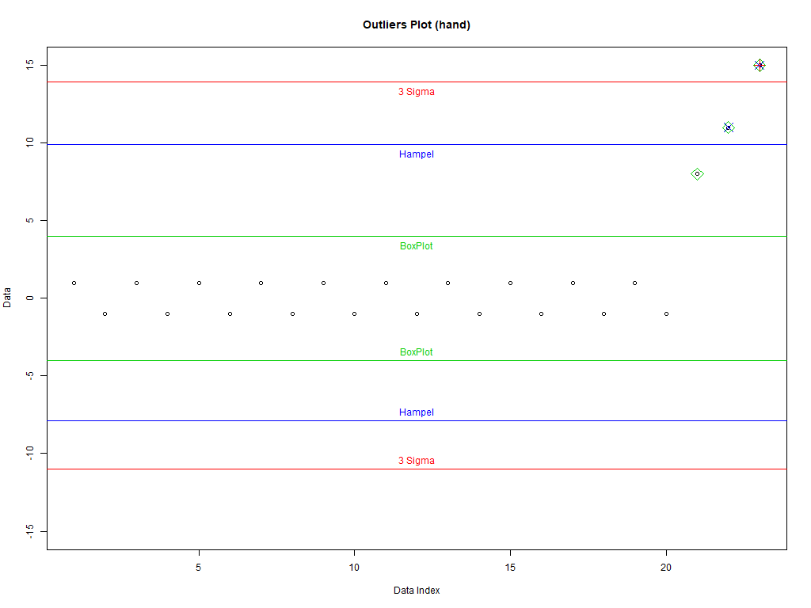

Outliers
| Author: | Mitch Richling |
| Updated: | 2023-11-15 09:31:12 |
Copyright 2020-2021 Mitch Richling. All rights reserved.
Table of Contents
1. Metadata
The home for this HTML file is: https://richmit.github.io/ex-R/outliers.html
Files related to this document may be found on github: https://github.com/richmit/ex-R
Directory contents:
src |
- | The org-mode file that generated this HTML document |
docs |
- | This html document |
data |
- | Data files |
tangled |
- | Tangled R code from this document |
2. Example Data
Three kinds of data (set dataType to one of the following):
- '
hand' – Hand crafted for a nice plot - '
normzoom' – Heavy tails constructed from a sequence of normals - '
weibull' – Weibull has a heavy tail, and it is always positive
dataType <- 'hand' if(dataType=='normzoom') daData <- do.call(c, lapply(1:5, function (x) rnorm(2^(7-x), sd=2*x))) if(dataType=='hand') daData <- c(rep(c(1,-1), 10), c(8,11,15)) if(dataType=='weibull') daData <- rweibull(200, .8) dataType
[1] "hand"
3. Good Old 3 sigma rule
Also called the "normal" Rule
Good data: [mean–c*sd, mean+c*sd]
cParmSig <- 3 # This is where the "3" comes from in "3 Sigma" daMean <- mean(daData) # The "center" of our "non-outlier" interval daSD <- sd(daData) # The "radius" of our "non-outlier" interval cutOffSig <- cParmSig*c(-1, 1)*daSD+daMean # Lower and upper limits of our "non-outlier" interval
4. Hampel identifier
Good data: [median–c*mad, median+c*mad]
cParmHem <- 3 # This is the most common value used today daMAD <- mad(daData) # The "center" of our "non-outlier" interval daMedian <- median(daData) # The "radius" of our "non-outlier" interval cutOffHem <- cParmHem*c(-1, 1)*daMAD+daMedian # Lower and upper limits of our "non-outlier" interval
5. boxplot rule
Good data: [Q1–c*IQD,Q3+c*IQD], IQD=Q3–Q1, Q1 is the first quartile, and Q3 the third
cParmBox <- 1.5 # This is the most common value used today daQUAR <- quantile(daData, c(.25, .75)) # The first and third quartiles (Q1 & Q3) cutOffBox <- daQUAR+cParmBox*c(-1,1)*(daQUAR[2]-daQUAR[1]) # Lower and upper limits of our "non-outlier" interval
6. Plot it all
plot(1:length(daData), daData, # Plot the data with artificial x-data ylim=c(-1,1)*max(abs(c(daData, # Set the y-axis to be symmetric about 0 and cutOffSig, cutOffHem, cutOffBox))), # big enough for all data and intervals main=paste('Outliers Plot (', dataType, ')', sep=''), ylab='Data', xlab='Data Index') abline(h=cutOffSig, col='red') # Draw the interval limit lines outIdx <- daData<cutOffSig[1] | daData>cutOffSig[2] # Find outliers points((1:length(daData))[outIdx], daData[outIdx], col='red', cex=2, pch=3) # Draw red, pch=3 points on outliers if(dataType=='hand') text(12, cutOffSig, "3 Sigma", pos=c(3,1), col='red') # Label interval limits for hand crafted data abline(h=cutOffHem, col='blue') # Draw the interval limit lines outIdx <- daData<cutOffHem[1] | daData>cutOffHem[2] # Find outliers points((1:length(daData))[outIdx], daData[outIdx], col='blue', cex=2, pch=4) # Draw blue, pch=4 points on outliers if(dataType=='hand') text(12, cutOffHem, "Hampel", pos=c(3,1), col='blue') # Label interval limits for hand crafted data abline(h=cutOffBox, col='green3') # Draw the interval limit lines outIdx <- daData<cutOffBox[1] | daData>cutOffBox[2] # Find outliers points((1:length(daData))[outIdx], daData[outIdx], col='green3', cex=2, pch=5) # Draw green3, pch=5 points on outliers if(dataType=='hand') text(12, cutOffBox, "BoxPlot", pos=c(3,1), col='green3') # Label interval limits for hand crafted data if(dataType!='hand') # For non-hand crafted data, draw a legend legend("bottomleft", legend=c("3 Sigma", "Hampel", "BoxPlot"), text.col=c('red', 'blue', 'green3'), col=c('red', 'blue', 'green3'), pch=c(3,4,5))

6.1. Refrence Plots